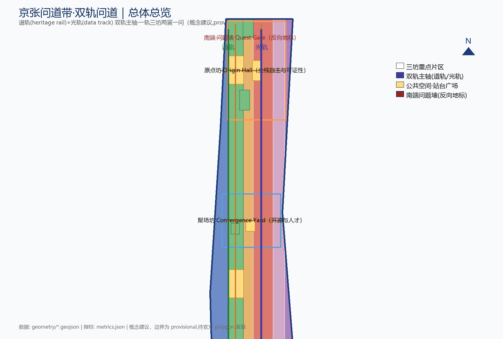
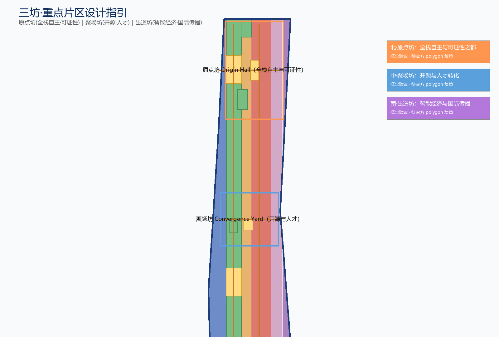
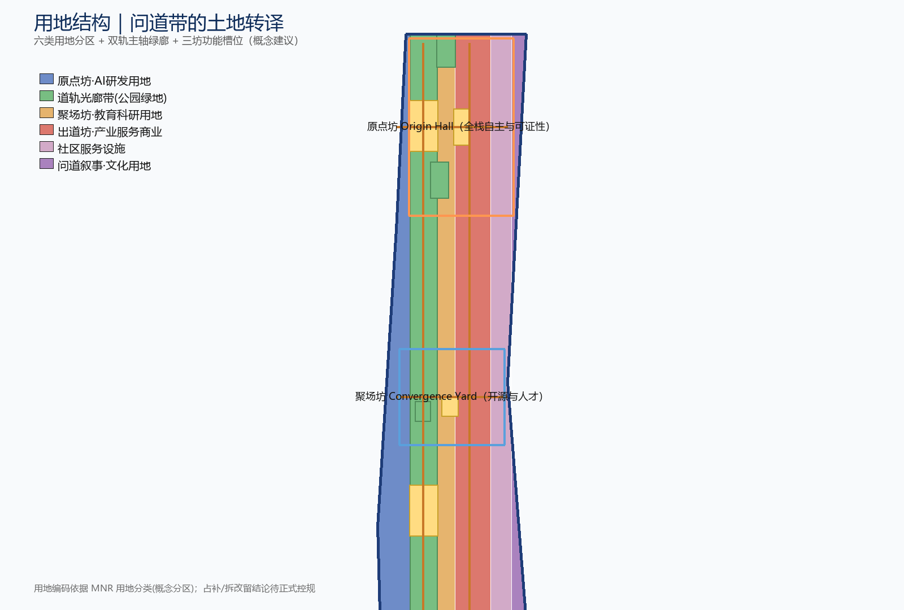
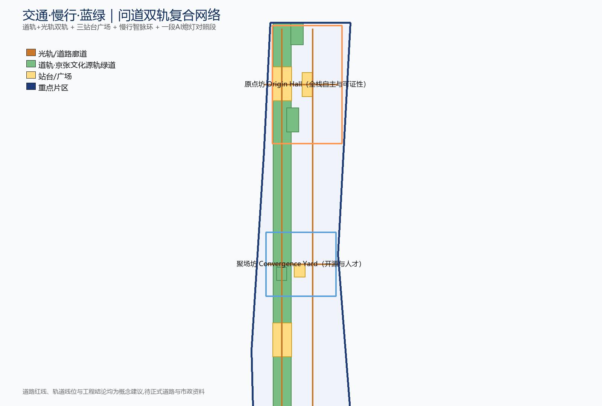
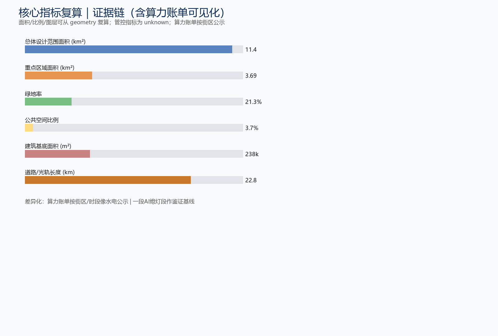

核心指标
总览地图

三层范围
统筹研究范围：约 43.6 km²（北至北五环、东至京藏高速、南至西直门外大街、西至万泉河路）
总体设计范围：约 11.4 km²（京张遗址公园周边 1-2 公里城市地区和产业区）
重点区域范围：约 3.684 km²（众智园 / AI原点社区 / 大钟寺）
重点区域 · 用地分区


交通慢行 · 蓝绿公共空间 · 建筑


建筑：概念级建筑基底分布在三处重点片区，建筑面积、高度、体量与拆改留结论均为概念建议，待正式控规确认。
更新项目
| 编号 | 项目 |
|---|
| JZ-01 | 问道带慢行断点缝合与双轨并列节点 |
| JZ-02 | 原点坊清河创新界面与技术流水台 |
| JZ-03 | 聚场坊近校成果转化街与口述史收音站 |
| JZ-04 | 出道坊大钟寺站四象限步行连通与问题墙 |
| JZ-05 | 光轨可展装置试装与轨光翼公共算力点 |
| JZ-06 | 问道周年度活动公共路线与AI暗夜段 |
AI 场景
01 技术流水台 PSR02 城市值班小报 FUSA03 排号调解处 CDSA04 口述史收音站 CVM05 市民点单台 CACS06 朝圣路径生成 PPS07 事后说法本 ARA08 算力账单可见化09 双轨并列受限问答（N2 纪事）10 N1 光车投影鉴证
用户画像
问道开发者出道初创团队国际访客周边居民高校师生老人与照护者残障人士夜间劳动者与非中文使用者
AI 朝圣地标（含反向地标）
清华园站 N1「光车」（艺术装置）N3 中关村创想核「可更新活档案墙」南端「问题墙 / Quest Gate」（反向地标）
命名 / IP
主名「京张问道带」The Dao Belt；三坊 Origin Hall / Convergence Yard / Frontier Gate；两翼 Frame-Quest / Track-Light；IP「问号轨」Quest-Rail——直轨平滑弯成问号，青龙桥人字折角提纯，铺装纹样+导视标头+活动徽记三用（概念建议）。
任务覆盖
| ID | 任务 | 状态 |
|---|
| agent.1 | Overall concept & functional coordination | OK |
| agent.2 | Full-stack autonomy & world-class ecosystem | OK |
| agent.3 | AI+ scenario empowerment & smart city | OK |
| agent.4 | AI public space, native businesses & landmarks | OK |
| agent.5 | Cultural narrative fusion | OK |
| agent.6 | Global events & long-term operations | OK |
自检状态
四道自检（确定性校验 / 空间复核 / 可视化打包 / 专业证据）已在本机运行；provisional 边界下可进入 intake，正式专业评分以官方 polygon 复算为准。
来源
sources.json：官方公告 OFFICIAL-ANNOUNCEMENT、智能体任务书 AGENT-TASKBOOK、site-package、source_registry、临时边界 BOUNDARY-SOURCE、重点区 KEY-AREA-SOURCE。
假设
assumptions.json：A-BOUNDARY-001（临时边界待官方 polygon 复算）、A-CONTROLS-001（控规条件待确认）、A-DATA-001（图层为概念级）、A-MODEL-001（模型与生成方式披露）、A-PHASING-001（分期为概念逻辑）。京张非中国第一条运营铁路（吴淞在先），是第一条中国人自主主持的干线；詹天佑主持、中外工程师与工人共同完成。
本页为离线电子展示成果。权威数据以 GeoJSON、metrics.json、矩阵与自检结果为准；空间与指标基于 provisional boundary，待官方 polygon 发布后复算。所有内容为概念建议，不替代正式规划。差异化声明：避开「带/脉/脊/轴/环 + 三核两翼 + 12卡 + 5地标」模板，主打「问道叙事 + 可证性 + 钱权可见化 + 反AI照段」四条差异化主线。